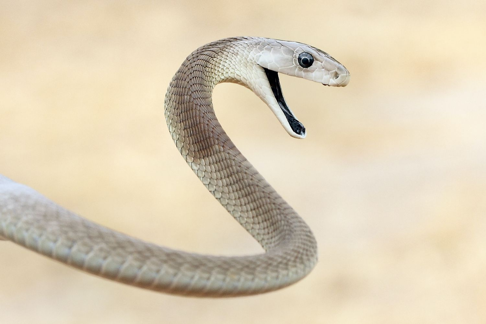

.jpg)

.jpg)
.jpg)
Black Mamba
ชื่อวิทยาศาสตร์: Dendroaspis polylepis
ลักษณะทั่วไป
เป็นงูพิษขนาดใหญ่ที่สุดในทวีปแอฟริกา และติดอันดับงูที่อันตรายที่สุดในโลก ทั้งจากความรวดเร็ว พิษร้ายแรง และพฤติกรรมดุดันเมื่อรู้สึกถูกคุกคาม
- สีลำตัวและช่องปาก: แม้จะชื่อ Black Mamba แต่สีผิวภายนอกไม่ใช่สีดำ โดยมีตั้งแต่สีเทา สีเหลืองมะกอก สีน้ำตาลขี้เถ้า ไปจนถึงสีเทาเข้ม จุดเด่นอันเป็นที่มาของชื่อคือ เยื่อบุภายในช่องปากที่เป็นสีดำสนิท ซึ่งจะเปิดกว้างเพื่อขู่เตือนเมื่อรู้สึกถูกคุกคาม
- รูปทรงหัว: มีลักษณะหัวยาว เรียว และเป็นรูปทรงสี่เหลี่ยมผืนผ้าโค้งมนเล็กน้อย คล้ายโลงศพ (Coffin-shaped head) ตาโต ตาและแก้วตาเป็นสีน้ำตาลเข้มถึงดำ
- สัดส่วน: ลำตัวเรียวยาว มีกล้ามเนื้อที่แข็งแรงและมีความคล่องตัวสูงมาก รูปร่างที่เพรียวลมช่วยให้ Black Mamba สามารถเลื้อยเคลื่อนที่บนพื้นดินได้อย่างรวดเร็วถึง 16–20 กิโลเมตรต่อชั่วโมง
- เกล็ด: เกล็ดตามลำตัวเรียบเนียน มีความเงางามเล็กน้อย บริเวณกลางลำตัวมีเกล็ดประมาณ 21–25 แถว ส่วนท้องมีสีเหลืองอ่อนหรือสีครีมขาว
- ความยาว: เป็นงูพิษที่มีขนาดลำตัวยาวเป็นอันดับ 2 ของโลก รองจากงูจงอาง ความยาวเฉลี่ยของ Black Mamba อยู่ที่ประมาณ 2 ถึง 3 เมตร แต่ตัวเต็มวัยที่สมบูรณ์สามารถยาวได้สูงสุดถึง 4.3–4.5 เมตร
- น้ำหนัก: ลำตัวเพรียวยาว ไม่ใช่งูอ้วนหนา น้ำหนักเฉลี่ยอยู่ที่ประมาณ 1.6 ถึง 2 กิโลกรัม
- ขนาดตัว: เส้นผ่านศูนย์กลางลำตัวเล็กใกล้เคียงกับขนาดของนิ้วมือมนุษย์ ตัวเมียมักมีขนาดลำตัวยาวกว่าตัวผู้เล็กน้อย
- ประเภทเหยื่อ: เน้นล่าสัตว์เลือดอุ่นขนาดเล็กเป็นหลัก เช่น หนู กระพริบ/กระรอก กระต่ายป่า ค้างคาว และนกบางชนิด ในบางครั้งอาจกินงูหรือกิ้งก่าขนาดเล็ก
- สำหรับเหยื่อขนาดเล็กบนพื้น (เช่น หนู): Black Mamba จะฉกกัดเพื่อฉีดพิษแล้วปล่อยเหยื่อทันที พิษจะออกฤทธิ์อย่างรวดเร็วทำให้เหยื่อเป็นอัมพาตและตายแทบจะในทันที จากนั้นมันจึงเลื้อยตามกลิ่นไปกลืนเหยื่อ
- สำหรับเหยื่อประเภทนกหรือค้างคาวบนต้นไม้: มันจะฉกกัดแล้วกัดค้างไว้ ไม่ปล่อยให้เหยื่อตกลงพื้น เพื่อป้องกันไม่ให้เหยื่อบินหนีไปก่อนพิษจะออกฤทธิ์
- ระบบย่อยอาหาร: มีน้ำย่อยในกระเพาะที่รุนแรงมาก สามารถย่อยเหยื่อทั้งตัวรวมถึงกระดูกและขนได้หมดภายในเวลาเพียงไม่กี่วัน
Black Mamba เป็นสัตว์ผู้ล่าที่ล่าเหยื่อด้วยความเร็วและสายตาที่เฉียบแหลม โดยฉีดพิษแล้วรอให้เหยื่อแน่นิ่งก่อนกลืนกิน
- รักสงบและหลีกเลี่ยงการปะทะ: โดยธรรมชาติแล้ว Black Mamba ไม่ใช่งูที่ก้าวร้าวอย่างไม่มีเหตุผล มันมักจะใช้ชีวิตอย่างสันโดษ หลีกเลี่ยงมนุษย์ และพยายามเลื้อยหนีลงรูหรือขึ้นต้นไม้เมื่อรู้สึกถึงอันตราย
- ดุดันอย่างรุนแรงเมื่อจนมุม: หากถูกต้อนให้อยู่ในมุมอับหรือถูกรบกวนระยะกระชั้นชิด Black Mamba จะเปลี่ยนพฤติกรรมเป็นการป้องกันตัวอย่างเกรี้ยวกราดทันที
-
ท่าทางข่มขู่ (Threat Display):
- ยกลำตัวส่วนหน้าขึ้นสูงจากพื้น (อาจสูงได้ถึง 1 ใน 3 ของความยาวลำตัว)
- แผงคอกว้างออกเล็กน้อยคล้ายงูเห่า (แต่ไม่กว้างเท่า)
- อ้าปากกว้างเพื่อเผยให้เห็น ภายในช่องปากสีดำสนิท
- ส่งเสียงขู่ฟ่อ (Hissing) อย่างรุนแรง
- การโจมตี: หากศัตรูยังไม่ถอยออกไป Black Mamba จะพุ่งฉกกัดซ้ำๆ หลายครั้งติดต่อกันด้วยความเร็วสูงมาก และสามารถฉกกัดได้ในระดับความสูงเท่าอกของมนุษย์
- การหากิน: เป็นงูที่ออกหากินในเวลากลางวัน (Diurnal) และจะกลับเข้าพักผ่อนในรังเดิม (เช่น รูโพรงไม้ รังปลวกร้าง หรือรอยแยกของโขดหิน) ในเวลากลางคืน
ถิ่นอาศัย พิษ และความอันตราย
- ถิ่นอาศัย:
- แอฟริกาตะวันออกและกลาง: พบในประเทศเคนยา แทนซาเนีย ยูกันดา เอธิโอเปีย โซมาเลีย และสาธารณรัฐประชาธิปไตยคอนโก
- แอฟริกาตอนใต้: พบในประเทศแอฟริกาใต้ นามิเบีย บอตสวานา ซิมบับเว โมซัมบิก แซมเบีย และแองโกลา
- ป่าสะวันนา (Savannas) และป่าโปร่ง (Woodlands): สภาพแวดล้อมที่มีทุ่งหญ้าสลับต้นไม้เป็นพื้นที่ที่พบ Black Mamba ได้บ่อยที่สุด
- พื้นที่โขดหิน (Rocky hills/Koppies): ชอบอาศัยอยู่ตามซอกหิน โขดหิน หรือถ้ำขนาดเล็ก ซึ่งช่วยปกป้องมันจากความร้อนและศัตรู
- พุ่มไม้หนาและทุ่งหญ้าสูง: เป็นแหล่งซ่อนตัวและล่าเหยื่อชั้นดี
- แนวป่าชายฝั่งและริมแม่น้ำ: บริเวณที่มีแหล่งน้ำและมีสัตว์เล็กอุดมสมบูรณ์
- รังปลวกขนาดใหญ่ที่ถูกทิ้งร้าง (Abandoned termite mounds)
- ใโพรงไม้แห้ง หรือซอกใต้รากไม้
- รอยแยกตามโขดหิน
- บางครั้งอาจเข้าไปอยู่ตามบ้านเรือน เล้าไก่ หรือยุ้งฉางของมนุษย์ที่อยู่ในเขตชนบทเพื่อหาอาหารและที่ซ่อนตัว
- พิษ:
- Neurotoxin (พิษทำลายระบบประสาท): เป็นองค์ประกอบหลัก ออกฤทธิ์ยับยั้งการทำงานของกระแสประสาท ทำให้กล้ามเนื้อหยุดทำงาน เกิดอาการเป็นอัมพาต
- Cardiotoxin (พิษทำลายระบบหัวใจ): ทำลายเซลล์กล้ามเนื้อหัวใจโดยตรง ทำให้การเต้นของหัวใจผิดปกติ และระบบไหลเวียนโลหิตล้มเหลว
- Dendrotoxin: สารพิษเฉพาะกลุ่มงูแมมบาที่เร่งการปล่อยสารสื่อประสาท จนทำให้ระบบประสาทถูกกระตุ้นเกินขนาดก่อนจะล้มเหลวอย่างรวดเร็ว
- ลำดับอาการหลังถูกกัด (Clinical Symptoms Timeline)
- รู้สึกปวดหรือตึงเบาๆ บริเวณรอยเขี้ยว (มีรอยแผลเล็กน้อย)
- มีรสชาติคล้ายโลหะ หรือรสขมในปาก
- รู้สึกชา คันยิบๆ (Tingling sensation) บริเวณริมฝีปาก ลิ้น และหน้าผาก
- เริ่มมองเห็นภาพซ้อน (Diplopia) หนังตาตก (Ptosis)
- พูดไม่ชัด น้ำลายไหล ควบคุมการกลืนไม่ได้
- เหงื่อออกมาก รูม่านตาขยายกว้าง
- วิงเวียนศีรษะ สับสน คลื่นไส้ และอาเจียน
- กล้ามเนื้อทั่วร่างกายเริ่มอ่อนแรงและเป็นอัมพาต แขนขาเคลื่อนไหวไม่ได้
- หายใจลำบาก เนื่องจากกล้ามเนื้อกะบังลมและกล้ามเนื้อช่วยหายใจเป็นอัมพาต
- ความดันโลหิตตก ช็อก และการทำงานของหัวใจล้มเหลว
- หากถูกกัดแล้วได้รับพิษเข้าสู่ร่างกายเต็มที่ (Envenomation) และ ไม่ได้รับการรักษา อัตราการเสียชีวิตสูงถึง 100%
- การเสียชีวิตสามารถเกิดขึ้นได้เร็วที่สุดใน 45 นาที ถึง 3 ชั่วโมง หลังถูกกัด (ขึ้นอยู่กับตำแหน่งที่โดนกัดและปริมาณพิษที่ได้รับ) โดยสาเหตุหลักเกิดจาก ระบบหายใจล้มเหลว
- ระดับความอันตราย: อันตราย ☠☠☠☠: พิษออกฤทธิ์เร็วมาก ทำลายทั้งระบบประสาทและหัวใจ ปริมาณพิษจากการฉกกัดเพียงครั้งเดียวสามารถสังหารมนุษย์ผู้ใหญ่ได้มากกว่า 10 คน หากถูกกัดและไม่ได้รับการฉีดเซรุ่มต้านพิษทันท่วงที อัตราการเสียชีวิตคือ 100% ภายในเวลาไม่กี่ชั่วโมง เคลื่อนที่บนพื้นได้เร็วที่สุดในบรรดางูทั้งหมด (16–20 กม./ชม.) หากจนมุมจะไม่เลื้อยหนีแต่จะพุ่งฉกกัดซ้ำๆ อย่างรวดเร็ว และยกลำตัวฉกกัดได้สูงถึงระดับอกของมนุษย์ โชคดีที่งูตัวนี้อยู่ค่อนข้างห่างไกล เลยได้ 4 กะโหลกไปก่อน
Black Mamba มีถิ่นกำเนิดในทวีปแอฟริกา โดยพบกระจายตัวเป็นวงกว้างในพื้นที่ แอฟริกาใต้ และ แอฟริกาตะวันออก รวมถึงบางส่วนของแอฟริกากลางและแอฟริกาตะวันตก
Black Mamba สามารถปรับตัวเข้ากับสภาพแวดล้อมทางธรรมชาติได้หลากหลาย แต่ จะไม่พบในป่าดงดิบชื้นขนาดใหญ่ (Rainforest) หรือ ทะเลทรายแห้งแล้งจัด โดยพื้นที่ที่มันชอบอาศัยอยู่ ได้แก่:
Black Mamba มีพฤติกรรมรักถิ่นฐาน มักจะใช้ "รังประจำ" ในการนอนหลับพักผ่อนเวลากลางคืนและหลบแดดในยามบ่าย โดยแหล่งกบดานที่มักเลือกใช้ ได้แก่:
พิษของ Black Mamba ถือเป็นหนึ่งในพิษงูที่ออกฤทธิ์เร็วและรุนแรงที่สุดในโลก โดยประกอบด้วยสารพิษหลัก 2 ประเภท:
หากไม่ได้รับการรักษาด้วยเซรุ่มต้านพิษ อาการจะพัฒนาอย่างรวดเร็วภายในไม่กี่นาทีตามลำดับดังนี้:
1. ระยะ 5–10 นาทีแรก:
2. ระยะ 15–30 นาที:
3. ระยะ 30–60 นาทีขึ้นไป:
ระยะเวลาและการเสียชีวิต
Fun Fact
- เร็วที่สุดในบรรดางูบนโลก: Black Mamba ครองสถิติตำแหน่ง งูที่เลื้อยเร็วที่สุดในโลก โดยทำความเร็วบนพื้นดินได้สูงถึง 16–20 กิโลเมตรต่อชั่วโมง (เร็วพอๆ กับคนปั่นจักรยานหรือวิ่งเหยาะๆ) ทำให้เป้าหมายหนีพ้นได้ยากมากหากมันตั้งใจพุ่งใส่
- ปากสีดำคือ "เครื่องหมายเตือนภัย": ชื่อ Black Mamba ไม่ได้มาจากสีผิว แต่มาจาก เยื่อบุภายในช่องปากที่เป็นสีดำสนิทเหมือนถ่าน เวลาขู่ มันจะยกลำตัว อ้าปากกว้าง เพื่อให้สีดำตัดกับพื้นหลัง เป็นสัญญาณเตือนสุดน่ากลัวว่า "ถอยไป ไม่งั้นตาย!"
- นกแร้งและพังพอน = พญามัจจุราช: แม้จะเป็นยอดนักล่า แต่มันก็มีศัตรูตามธรรมชาติ โดยเฉพาะ พังพอน (Mongoose) ที่มีความไวสูงและมีภูมิคุ้มกันพิษงูบางส่วน รวมถึง นกอินทรีจับงู (Snake Eagle) ที่ชอบโฉบลงมาจากฟ้าลาก Black Mamba ขึ้นไปซอยจุ๊อยู่บ่อยๆ